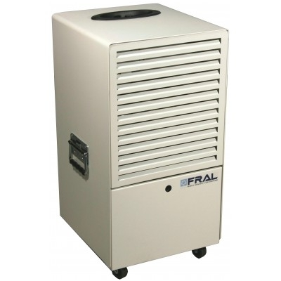

Drėgmės surinkėjai
About me

Past Articles
- Drėgmės surinkėjai:
“Aerial” drėgmės surinkėjai veikia energiją taupančiu kondensaciniu principu su šilumos sugrąžinimu. Perteklinė drėgmė patalpoje pašalinama, o laisva šiluma panaudojama patalpos šildymui. Taip palaikomas optimalus drėgmės lygis ir išvengiama kondensato susidarymo, sumažėja išlaidos šildymui, pagerėja patalpų ... - Drėgmės surinkėjas.lt - Drėgmės surinkėjų nuoma ir ...
Drėgmės surinkėjai naudojami įvairiais atvejais, pvz. namuose šalinant buities metu sukurtą drėgmės perteklių, statybose renkant drėgmę iš statybinių medžiagų, sausinant orą rūsiuose bei garažuose ir t.t. Pagal naudojimo paskirtį drėgmės surinkėjai gali skirtis savo našumu - tai yra kiek drėgmės oro sausintuvas gali ... - Oro sausintuvai - drėgmės surinkėjai - Eoras
Drėgmės surinkėjai (oro sausintuvai) Aukštos kokybės drėgmės surinkėjai (oro sausintuvai) „AMCOR“ efektyviai sugeria drėgmę patalpose. Besikaupianti drėgmė – viena dažniausiai pasitaikančių problemų įvairiose patalpose. Ypač tai liečia vidaus baseinų, dušo ar kitas patalpas, kuriose kaupiasi drėgmė. - Pramoniniai drėgmės surinkėjai, oro sausintuvai
Drėgmės surinkėjai (oro sausintuvai) pagal jų veikimo principą skirstomi į kondensacinius ir adsorbcinius. Prieš pasirenkant juos, taip pat svarbu įvertinti įrenginio galią, patalpos plotą, kuri norite sausinti ir drėgmę sukeliančius šaltinius. - Drėgmės surinkėjai internetu – TECHNORAMA
Siūloma visa drėgmės surinkėjų modelių įvairovė: pakabinami ir pastatomi drėgmės surinkėjai, ventiliacijos ir kondicionavimo sistemos viešiesiems baseinams. Nuo kiekvieno kvadratinio metro baseino vandens paviršiaus normaliomis sąlygomis išgaruoja apie 150-250 g drėgmės per valandą. - Drėgmės surinkėjai « Leopolis.lt « Drėkintuvai, drėgmės ...
Oro sausintuvai - drėgmės surinkėjai. Namuose, biure, gamybinėse patalpose, archyvuose, baseinuose ar kitose patalpose per didelis drėgmės kiekis? Susiduriate su pelėsiu ir nemaloniu drėgmės pojūčiu? Oro sausintuvas - drėgmės surinkėsjas - yra puiki išeiti sprendžiant tokias problemas. - Drėgmės surinkėjai - Sausintuvai
Drėgmės surinkėjai, oro sausintuvai, šildytuvai, ventiliatoriai, matuokliai. Nemokama konsultacija. Nemokami matuokliai. Drėgmės surinkėjų nuoma konkurencingomis kainomis! Drėgmės surinkėjas - oro sausintuvas padeda palaikyti optimalų oro drėgnumą patalpoje, pašalinti perteklinę drėgmę. - Drėgmės surinkėjai (oro sausintuvai) - NIT
Pramoniniai oro sausintuvai pasižymi dideliu efektyvumu norint patalpose išlaikyti tinkamą drėgmės lygį. Dažniausiai šie įrenginiai yra naudojami archyvuose, skalbyklose, maisto ar farmacijos pramonėje bei baseinuose. - Oro sausintuvai | Drėgmės surinkėjai - OROsprendimai
Kaip išsirinkti | Drėgmės surinkėjai (sausintuvai) Kaip išsirinkti drėgmės surinkėją Kondensatas susidaro jau prie +9,5 ºC ir 50% santykinės oro drėgmės ir kaupiasi ant sienų, baldų, stiklinių konstrukcijų, langų. - Drėgmės surinkėjai (oro sausintuvai) - Baseinų chemija ...
Drėgmės surinkėjus paprasta prižiūrėti. Jie ekonomiški ir modernaus, šiuolaikiško dizaino. Tai puikus sprendimas ne tik buitinėms patalpoms, bet ir biurams, sandėliams bei kitokio pobūdžio patalpoms. AERIAL ir TROTEC drėgmės surinkėjai veikia energiją taupančiu, kondensaciniu principu, sugrąžindami šilumą. Drėgmės ...
Menu
- Drėgmės surinkėjai:
- Drėgmės surinkėjas.lt - Drėgmės surinkėjų nuoma ir ...
- Oro sausintuvai - drėgmės surinkėjai - Eoras
- Pramoniniai drėgmės surinkėjai, oro sausintuvai
- Drėgmės surinkėjai internetu – TECHNORAMA
- Drėgmės surinkėjai « Leopolis.lt « Drėkintuvai, drėgmės ...
- Drėgmės surinkėjai - Sausintuvai
- Drėgmės surinkėjai (oro sausintuvai) - NIT
- Oro sausintuvai | Drėgmės surinkėjai - OROsprendimai
- Drėgmės surinkėjai (oro sausintuvai) - Baseinų chemija ...
Drėgmės surinkėjas.lt - Drėgmės surinkėjų nuoma ir pardavimas, dregmes surinkejas, dregmes surinkejas nuoma

DRĖGMĖS SURINKĖJAS.LT - DRĖGMĖS SURINKĖJŲ NUOMA IR PARDAVIMAS! Susisiekite su mumis Tel. numeris +370 6760 3787 DRĖGMĖS SURINKĖJAS
IŠSIRINKITE JUMS TINKAMIAUSIĄ DRĖGMĖS SURINKĖJĄ UŽ GERIAUSIĄ KAINĄ!
Kam drėgmės surinkėjas naudojamas?
Surinkti drėgmę remontuojant būstą. Išdžiovinti sienas, grindis, lubas. Pristabdyti bei panaikinti pėlėsį. Surinkti ir pristabdyti kondensatą nuo langų. Išdžiovinti sunkiai pasiekiamas, prastais ventiliuojamas vietas.Kur drėgmės surinkėjas naudojamas?
Gyvenamosiose patalpose. Rūsiuose, garažuose, sandėliuose. Ofisuose, treniruočių salėse bei kitur.Koks veikimo principas drėgmės surinkėjo?
Drėgmės surinkimo įrenginiai veikia energiją taupančiu kondensaciniu principu su šilumos sugrąžinimu. Tokiu būdu perteklinė drėgmė patalpoje ekonomiškai pašalinama ir laisva šiluma panaudojama patalpos šildymui. Kondensatas surenkamas vandens bakelyje arba gali būti pastoviai šalinamas per prijungtą žarną. Drėgmės surinkėjo įrenginiai jungiami į tinklą, dirba pilnai automatizuotai.MŪSŲ PASLAUGOS
DRĖGMĖS SURINKĖJŲ NUOMA
Nuomojame buitinius ir profesionalūs drėgmės surinkėjus už konkurencingą kainą! Drėgmės surinkėjas Jūsų pagalbininkas sprendžiant iškylusias problemas su drėgmės pertekliumi!
DRĖGMĖS SURINKĖJŲ PARDAVIMAS
Parduodame tiek naudotus, tiek naujus drėgmės surinkėjus. Esame praktiškai išbandę visus siūlomus įrenginius, todėl padėsime išrinkti Jums tinkamiausią!
DRĖGMĖS SURINKĖJAI
Drėgmės surinkėjas Trotec 170
Sausinimo našumas iki 52 l/24 h Galia 900 W Oro srautas 350 m³/h Vandens bako talpa 6,6 L (yra galimybė prijungti žarnelę) Svoris 30 kg Nuomojantis iki 7d. paros kaina 7.00€ Nuomojantis 7d. ir daugiau paros kaina 5.00€ Nuomojantis 30d. ir daugiau paros kaina 3.30€ Tel. numeris 867603787 Naudinga žinoti» Drėgmės surinkėjas tinka patalpoms iki 100 m2 , efektyviausiai veikia patalpoje 60 m2.
» Esant poreikiui yra galimybė prijungti žarnelę pastoviai vandens nutekėjimui (nemokamai pridedama) .
» Nuomojantis mūsų drėgmės surinkėjus esant poreikiui nemokamai pridedame betono ir medienos drėgmės matuoklį.
Skaityti plačiau
Drėgmės surinkėjas Trotec 171
Sausinimo našumas iki 52 l/24 h Galia 700 W Oro srautas 450 m³/h Vandens bako talpa 6 L (yra galimybė prijungti žarnelę) Svoris 36 kg Nuomojantis iki 7d. paros kaina 7.00€ Nuomojantis 7d. ir daugiau paros kaina 5.00€ Nuomojantis 30d. ir daugiau paros kaina 3.30€ Tel. numeris 867603787 Naudinga žinoti» Drėgmės surinkėjas tinka patalpoms iki 100 m2 , efektyviausiai veikia patalpoje 60 m2.
» Esant poreikiui yra galimybė prijungti žarnelę pastoviai vandens nutekėjimui (nemokamai pridedama) .
» Nuomojantis mūsų drėgmės surinkėjus esant poreikiui nemokamai pridedame betono ir medienos drėgmės matuoklį.
Skaityti plačiau
Drėgmės surinkėjas Ballu BDH 30
Sausinimo našumas iki 30 l/24 h Galia 530 W Oro srautas 210 m³/h Vandens bako talpa 6,5 L (yra galimybė prijungti žarnelę) Svoris 13 kg Nuomojantis iki 14d. paros kaina 4.00€ Nuomojantis 14d. ir daugiau paros kaina 3.00€ Nuomojantis 30d. ir daugiau paros kaina 2.00€ Tel. numeris 867603787 Naudinga žinoti» Drėgmės surinkėjas tinka patalpoms iki 50 m2 , efektyviausiai veikia patalpoje 30 m2.
» Esant poreikiui yra galimybė prijungti žarnelę pastoviai vandens nutekėjimui (nemokamai pridedama) .
» Nuomojantis mūsų drėgmės surinkėjus esant poreikiui nemokamai pridedame betono ir medienos drėgmės matuoklį.
Skaityti plačiau
Drėgmės surinkėjas Ballu BDH 35
Sausinimo našumas iki 35 l/24 h Galia 500 W Oro srautas 280 m³/h Vandens bako talpa 8 L (yra galimybė prijungti žarnelę) Svoris 17 kg Nuomojantis iki 14d. paros kaina 5.00€ Nuomojantis 14d. ir daugiau paros kaina 3.50€ Nuomojantis 30d. ir daugiau paros kaina 2.50€ Tel. numeris 867603787 Naudinga žinoti» Drėgmės surinkėjas tinka patalpoms iki 70 m2 , efektyviausiai veikia patalpoje 40 m2.
» Esant poreikiui yra galimybė prijungti žarnelę pastoviai vandens nutekėjimui (nemokamai pridedama) .
» Nuomojantis mūsų drėgmės surinkėjus esant poreikiui nemokamai pridedame betono ir medienos drėgmės matuoklį.
Skaityti plačiau
Drėgmės surinkėjas 50L/24h
Sausinimo našumas iki 50 l/24 h Galia 860 W Oro srautas 450 m³/h Vandens bako talpa 6 L (yra galimybė prijungti žarnelę) Svoris 30 kg Nuomojantis iki 7d. paros kaina 7.00€ Nuomojantis 7d. ir daugiau paros kaina 5.00€ Nuomojantis 30d. ir daugiau paros kaina 3.30€ Tel. numeris 867603787 Naudinga žinoti» Drėgmės surinkėjas tinka patalpoms iki 100 m2 , efektyviausiai veikia patalpoje 60 m2.
» Esant poreikiui yra galimybė prijungti žarnelę pastoviai vandens nutekėjimui (nemokamai pridedama) .
» Nuomojantis mūsų drėgmės surinkėjus esant poreikiui nemokamai pridedame betono ir medienos drėgmės matuoklį.
Skaityti plačiau
Drėgmės surinkėjas Shaffer 800
Sausinimo našumas iki 80 l/24 h Galia 1250 W Oro srautas 850 m³/h Vandens bako talpa 6 L (yra galimybė prijungti žarnelę) Svoris 58 kg Nuomojantis iki 14d. paros kaina 8.00€ Nuomojantis 14d. ir daugiau paros kaina 6.00€ Nuomojantis 30d. ir daugiau paros kaina 5.00€ Tel. numeris 867603787 Naudinga žinoti» Drėgmės surinkėjas tinka patalpoms iki 170 m2 , efektyviausiai veikia patalpoje 70 m2.
» Esant poreikiui yra galimybė prijungti žarnelę pastoviai vandens nutekėjimui (nemokamai pridedama) .
» Nuomojantis mūsų drėgmės surinkėjus esant poreikiui nemokamai pridedame betono ir medienos drėgmės matuoklį.
Skaityti plačiau
MENIU
Pagrindinis PARDAVIMAS NUOMA NAUDINGA KONTAKTAIPOPULIARIAUSI
Sausinimo našumas - iki 52 l/24 h Oro srautas - 350 m³/h Kaina 1 sav. 35 € Kaina 2 sav. 60 € Kaina 1 mėn. 100 € Skaityti plačiau Sausinimo našumas - iki 52 l/24 h Oro srautas - 450 m³/h Kaina 1 sav. 35 € Kaina 2 sav. 60 € Kaina 1 mėn. 100 € Skaityti plačiau Sausinimo našumas - iki 30 l/24 h Oro srautas - 210 m³/h Kaina 1 sav. 30 € Kaina 2 sav. 40 € Kaina 1 mėn. 60 € Skaityti plačiauSUSISIEKITE SU MUMIS
info@dregmessurinkejas.lt +370 6760 3787 Fabijoniškės, Vilnius Visos teisės saugomos © 2020 .
Posted by Jack  Read more
Read more  Comments (15)
Comments (15)  2020.10.29 10:40
2020.10.29 10:40